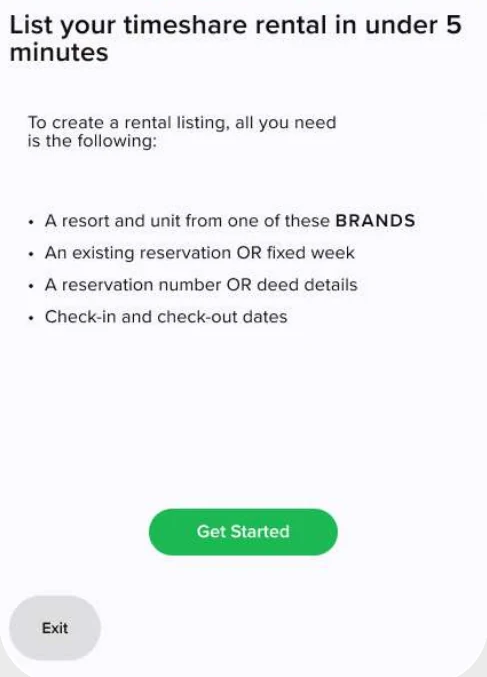

02 / Product research · KOALA
Why timeshare owners gave up on the first page of a listing
I joined KOALA, an early-stage timeshare marketplace, as its first dedicated UX researcher. The company was losing 75% of users within the first page of its listing process and had done little research on why. One of my first projects was a two-month study to find out, and to fix the page people were leaving from.
- My role
- First dedicated UX researcher (Nov 2020–Jul 2022). On this study: led the research and synthesis, wrote the UX recommendations, and prototyped the changes
- Team
- Two UX designers and me
- When
- Nov–Dec 2020 (this study)
- Methods
- Exploratory interviews · Belief/behavior matrix · Affinity mapping · Flow analysis · Market analysis · Prototyping · Heuristic review
- Outcome
- First-page success rate rose from 33% to 45%
01 Context
A marketplace with no research behind it
The company had seen three out of four people leave within the first page of the listing process. The company was young, and little to no research had been done on the people using the site. The business goal was simple to state: understand why users left the listing incomplete, and bring that 75% drop-off down.
02 Approach
Asking owners first
We started with people rather than the page. I ran more than 40 exploratory interviews with timeshare owners and others, then synthesized what we heard with a belief/behavior matrix and affinity mapping, alongside a user-flow analysis and a comparative market analysis.
The page asked for something owners didn’t have
The interviews kept coming back to one difference: how each person owned their timeshare. A deeded owner holds a set week at one resort. A points owner buys points that set their tier and books across the brand’s locations. A floating-week owner picks a week inside a season, often by racing to book the moment the calendar opens. Those differences decided what each person could type into the listing form.
Exhibit 01
Three kinds of owner, one required field
| Ownership | How it works | Reservation number? |
|---|---|---|
| Deeded | A deed to a specific week at one resort | Rarely used |
| Points | Points set the tier; book at any of the brand’s locations | Not singled out in my findings |
| Floating | Choose a week within a season when the calendar opens | Rarely used |
The first page wouldn’t let anyone continue without a reservation number, and many owners, especially those with deeded or floating weeks, rarely have one. The page also couldn’t save progress, going back a step restarted the listing, and nothing told people up front what details they would need. An owner without that number had no way forward and nothing to come back to.
03 Decisions
Making progress recoverable
I recommended three changes and prototyped them: let owners save their progress, make some fields optional, and say at the start what information a listing requires. After the save-progress and optional-field changes, the success rate on the first listing page rose from 33% to 45%, an increase of 12 percentage points.
Exhibit 02 · Prototype, 2020
Telling owners what they need before they start

- The requirements are listed before the form, so nobody discovers a missing detail three fields in.
- “Reservation number or deed details” lets deeded owners continue without a number they don’t use.
- “Existing reservation or fixed week” covers owners with a set week as well as those with a booked stay.
Exhibit 03
Success rate on the first listing page
04 Outcome
The wider role
This study was one of the first things I did at KOALA. Over the following year and a half, I set up the company’s research practice and a shared Miro insights repository, so product, design, and leadership could trace decisions back to customer evidence. I ran more than 90 research activities in all, spanning interviews, remote usability studies on UserTesting and Lookback, and A/B tests, and facilitated cross-functional ideation across more than eight projects.
A second pass through psychology
I also put together a quick heuristic review of go-koala.com, organized around ten principles from Susan Weinschenk’s work on how people use screens, from memory and attention to mental models. It looks at readability on destination pages and at the booking form’s layout, labels, and error handling. It is a review rather than a usability test, and it says so. KOALA acted on some of its recommendations.
Research artifact Read the heuristic review (password protected)